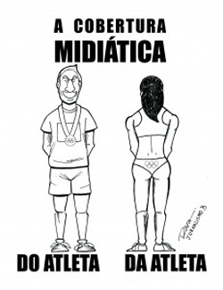

|
|
برزیل: گزارشگری زنستیزانه لکه ننگی بر پوشش خبری المپیک
شنبه21 مرداد 1391
شهرزادنیوز: توجه گسترده رسانههای مشهور به ورزشکاران زن در بازی های المپیک فضایی را در برزیل گشود که رسانههای شهروندی را به بحث و چالشگری در باره شیوه رایج گزارشدهی و خبررسانی رویدادهای مهم کشاند.

وبلاگ "آتیویسمو دی سوفا" به ابراز نظر در مورد خبری در باره یک ورزشکار استرالیایی میپردازد؛ خبری که در آن ادعا میشود این شناگر اضافه وزن دارد. گذشته از نقل قول از مجادله توئیتری بین یک خبرنگار مرد و حامیان تیم فوتبال زنان برزیل، این وبلاگ در باره مسئله مربوط به اونیفورم ورزشکاران چنین مینویسد:
تحقیر نقش زنان ورزشکار بخشی از روند ابزار [جنسی] دیدن زن است. برای مثال، بارها و بارها شنیدهام که تیم والیبال مردان بهتر از تیم زنان است. یا این که تیم فوتبال مردان ماهرتر از تیم زنان است و غیره. پس اگر ورزش زنان به اندازه ورزش مردان جاذبه ندارد، چرا هنوز وجود دارد و بودجه صرف آن میگردد؟ به علت اندام ورزشکاران است؟ حداقل این بخشی از آن چیزیست که رسانههای ورزشی به آن معتقدند، چون در لحظهای که ورزش و رکوردشکنی بایستی کانون تمرکز و مهمترین مسئله باشد، به اندام ورزشکار میپردازند.
وبلاگ "ژورنالیسم بی" در مطلب دیگری گزارش میدهد گرایش جنسی یکی از اعضای تیم هندبال برزیل به چنان مسئله مهمی برای خبرنگاران برزیلی تبدیل میشود که از "بازی بسیار خوبش" و مجموعه بازیهای این تیم غافل میمانند.
"ماخیسمو چاتو دی کادا دیا" در مطلبی با عنوان "ماخیسمو المپیک"، اخبار مربوط به زیبایی زنان ورزشکار المپیک را مطالب "غیر خبری" مینامد. در این مقاله آمده است:
منظره توهینآمیزی برای همه ما، زنان و مردان، اما به خصوص برای آنان، زنان ورزشکاری است که پس از سالها تمرین، به عنوان نماینده کشورشان وارد این مسابقات رقابتی میشوند و اکنون فقط به چاق و لاغر، یا آرایش مو، لبخند و البته باسنشان تقلیل مییابند.
وبلاگ "دیریتورز فوندامنتایس ال جی بی تی"، در بحثی راجع به حقوق بشر در جلوههای گوناگوناش، به تشریح تبعیضات در حق زنان، همجنسگرایان و ورزش میپردازد:
... تبعیض در زمینه آموزش ورزش بر اساس تصویر کلیشهای ساخته شده است که هویت مردان [از نظر پیروزی بر زنان] را تقویت کند، امری که با این فرهنگ آمیخته است. بنابراین همجنسگرایی و زنانگی به عنوان مراجعی منفی نگریسته میشوند.
از نظر وبلاگ "پیلولاس دیاریاس"، حضور زنان در مسابقات المپیک "چالشی است در برابر اتوریته مردانه." نویسنده با افزودن عنصر دیگری برای زیر سؤال بردن بدیهیات، در باره منطق نهفته در پشت تقسیمبندی بین تیمهای مردان و زنان چنین بحث میکند:
این ایده که پسران باید در فضایی جدا از دختران بازی کنند، به ذات انسانی ربطی ندارد، بلکه یک تحمیل اجتماعی است. روشن است که همیشه ورزشکاران تفاوتهایی با هم دارند، اما لزومی ندارد که بر اساس جنسیت تقسیمبندی شوند. چرا قدرت، وزن و چابکی معیار تفکیک نیست؟ تقسیمبندی جنسی، دلبخواهی است. و وسیله دیگریست برای دور نگه داشتن ما و ایجاد حس تفاوت.